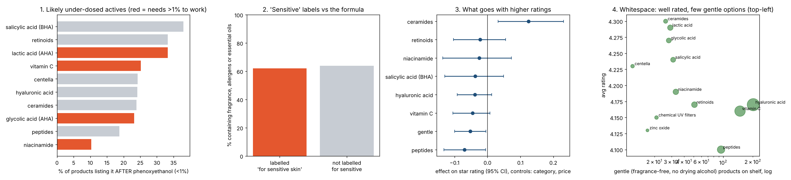

Formula checker: is the active really in there?
A chemist's read of skincare ingredient lists. Built for Deconstruct's Brand & Strategy / Founder's Office internship.
24%of products are likely under-dosed in actives that need more than 1%
62%of products tagged for sensitive skin contain fragrance or allergens
+0.13 starsceramides: the only active linked to higher ratings
1,231real ingredient lists analysed
Try it: paste any ingredient list
Rule: ingredients are listed in descending concentration down to 1%, and phenoxyethanol is capped at 1%. So an active listed after phenoxyethanol is below 1%. That matters only for actives that need more than 1% to work.
What 1,231 formulas show

Built by Pavitra Seth (BITS Pilani). Public data used as a stand-in; not affiliated with the company. Code and method: see the repository README.